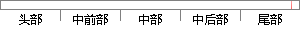

增加拍摄的趣味性，这将是下一步要做的工作。
片段位置图

相似结果|
相似片段 1：但由于纽结投影图的不确定性及纽结的复杂性，可视化的结果仍有些偏差，另外，该算法未实现三维化的可视效果等。因此，还需要改进和完善该算法，这将是下一步要做的工作。参考文献：京：电子工业出版社，2004：196．213．
|
※ 片段修改建议 ※
近似词参考：- 增加：增添 增长
- 工作：事情
系统自动生成语句：增添拍摄的趣味性，这将是下一步要做的事情。
注：本片段修改建议为系统自动生成，仅供参考。